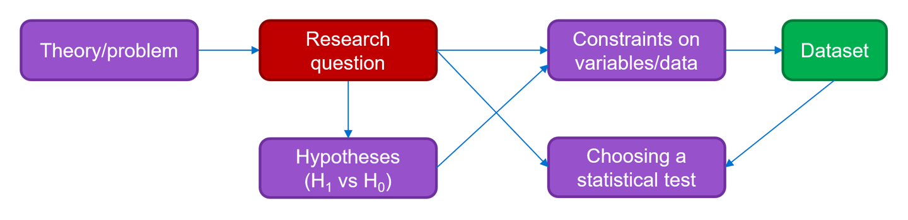

3 Research questions
This section of the course talks in more detail about what constitutes a good research question. Formulating a research question is an early and important step when designing experiments - though sometimes it can be tempting to dive right in without narrowing down what you want to research, this will make it impossible to plan your analysis in advance, and increases your chances of falling into common pitfalls.

Your research question serves several important purposes:
- It allows you to focus on a specific topic or problem within the theoretical context
- It provides a clear basis on which to formulate hypotheses
- It will guide or constrain the variables and types of data that you collect
- It will guide your analysis
Of course, it’s not the case that all research or data analysis falls within the inferential statistics/hypothesis testing framework. In data mining, for instance, a researcher explores a large dataset without any prior knowledge or hypotheses, instead finding patterns and relationships that can be used to summarise the dataset, or generate new protocols or theories.
Though the term “data mining” has not always been used positively, this type of research can be very useful in commercial settings such as market research and predicting trends.
In an academic research setting, though, data analysis is much more common than data mining - we usually have smaller datasets, and want to test something specific about those datasets. In those contexts, setting a good research question is an important part of the process.
3.1 Criteria for a good research question
Focused on a single topic
The scope of the question is important. If your research question is too broad, or tries to tackle multiple topics at once, you’ll struggle to design an experiment that can actually answer it. Even if you succeed, your experiment will necessarily be more complicated and take more time and resources to conduct, and may require compromising on some of your
Uses specific, well-defined concepts
Or, alternatively, be prepared with your own definition of the concepts/variables that you’re studying! It should be clear to you in advance of collecting data precisely what your variables of interest are and how you’re going to measure them. This should also be clear to other researchers who may be reading your work or using your data, since your experiment should also be repeatable by others. This is all particularly true if you’re studying something that is a little abstract or can be defined in multiple ways. (See the section on operationalising variables for more on this.)
Relevant and addressing a current research need
Your research question should be focused on something that is of use to the scientific community or the public more broadly, either by increasing our understanding of basic science or by promoting translation to clinical or industry settings. It should, ideally, be motivated by the existing literature, or more specifically, by gaps or outstanding questions in the existing literature. We could get very philosophical here about the role of researchers in society, but the focus of this course is much more practical than that, and from a practical perspective (and a cynical one): these are the studies that get funded and published!
Researchable
This perhaps seems obvious, but let’s unpack it a bit. It should be possible to answer your research question either by collecting original data, or using credible existing sources (e.g., a meta-analysis), and crucially, your research question shouldn’t depend on any subjective opinions or value judgements. For instance, it’s a good idea to avoid words like “best” or “worst” in your questions.
Original
In short: what you’re trying to find out, shouldn’t be possible to find out elsewhere already. An important caveat here is that this does not mean that attempts to replicate prior experiments aren’t valid - they absolutely are. The research question for a replication study is different to the earlier study, because it is specifically asking whether a previously observed effect or phenomenon can be replicated.
Complex and insightful
By “complex”, we don’t necessarily mean that the research question has to be difficult or convoluted for the sake of it - but it should have more than a simple yes or no answer. There are situations where a yes or no answer forms part of your overall conclusion - e.g., can tartigrades survive in the vacuum of space? Will compound X react with compound Y? Can humans remember their dreams? - but in all of these situations, a well-designed experiment should also give additional information, like the degree to which a particular phenomenon is observed, or details about the conditions under which it occurs. If you’re going to the effort of designing and conducting an experiment, you may as well be getting some detailed insight!
3.2 Some examples
Below are a list of research questions that don’t quite meet all of the above criteria. Have a read through them, and see if you can identify the issues, and how you might refine the question to improve it.
- Does owning a dog make you more likeable?
- Why do programmers make typos in their code?
- How does nuclear radiation affect humans?
- Do human beings have a soul that continues to exist after death?
- Is bureaucracy in the University bad or good?
- Does spending a lot of time on social media affect children’s development?
- Can pet parrots live more than 50 years?
3.3 Summary
- Within the statistical inference and hypothesis testing framework, it is essential to set a good research question
- Setting the question is the first step to designing the experiment that will answer it
- A good research question should be focused, researchable, relevant, feasible, original and complex